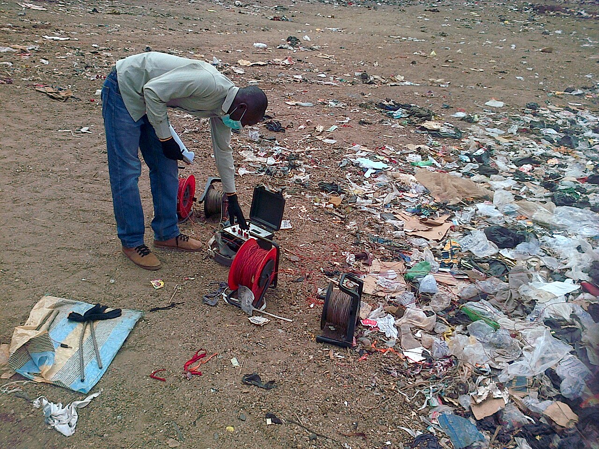
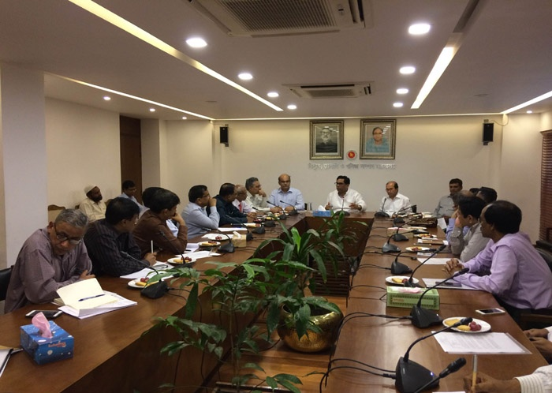
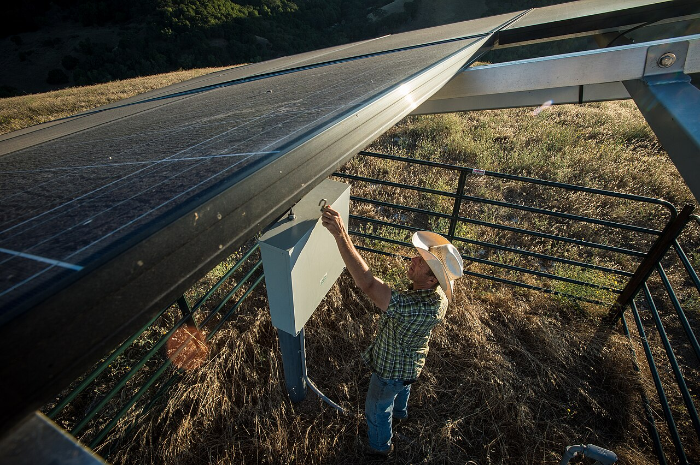

Our Specialized Services
Comprehensive water engineering solutions tailored to your specific needs.
Borehole Drilling
We're here to serve you better with our latest new Warrior Drilling machine. The Warrior can deliver 350m and above with ease, ensuring a reliable and clean water supply for every client, even in challenging terrains. We handle everything from site preparation to casing and well development.
- ✓ High-Depth Warrior Drilling (350m+)
- ✓ Domestic & Industrial Boreholes
- ✓ Agricultural Irrigation Wells

Geophysical Survey
Our geophysical surveys utilize advanced technology to accurately locate underground water sources. This crucial step minimizes the risk of dry wells and optimizes the drilling process by identifying the best location and depth for your borehole.
- ✓ Vertical Electrical Sounding (VES)
- ✓ Ground Water Potential Mapping
- ✓ Site Feasibility Analysis
Consultancies
We offer expert consultancy services in water resources management, environmental impact assessments, and project design. Our team of professionals provides the insights needed to make informed decisions about your water infrastructure.
- ✓ Water Management Strategies
- ✓ Project Design & Supervision
- ✓ Environmental Consulting


Solar Pump Installation
Go green with our solar-powered water pumping solutions. We design and install efficient solar systems that reduce operational costs and provide a sustainable alternative to traditional fuel-powered pumps, ideal for both rural and urban applications.
- ✓ Solar Panel Setup
- ✓ Inverter & Pump Integration
- ✓ Maintenance & Support